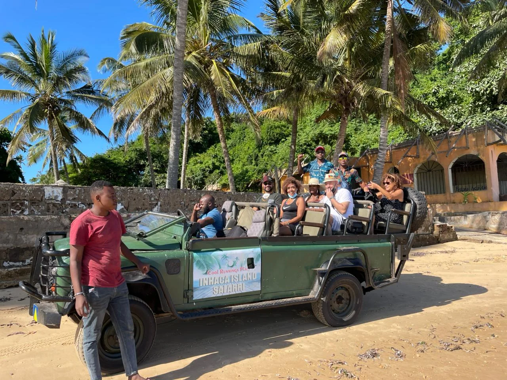
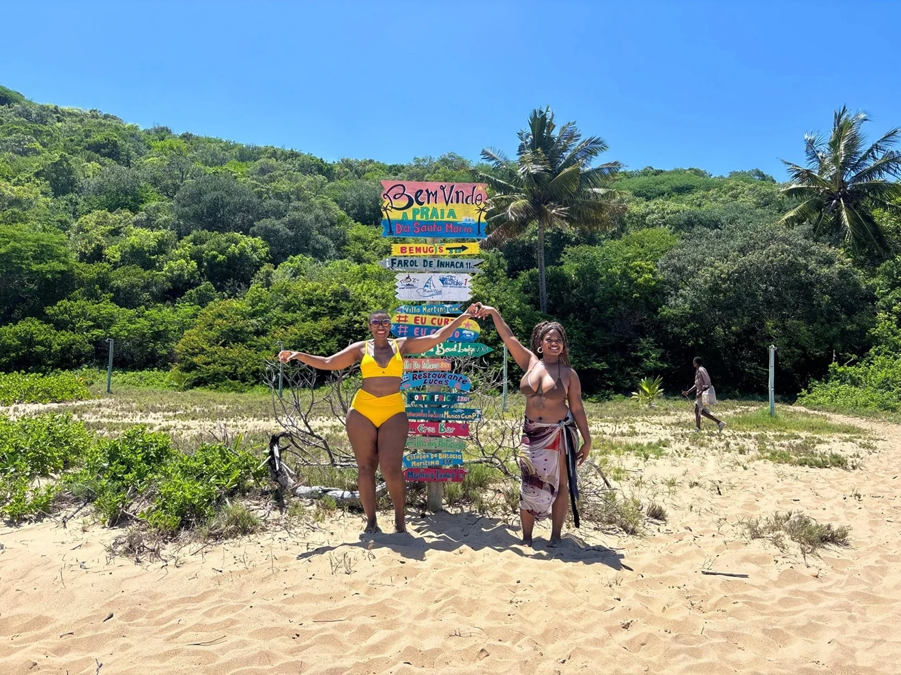

Island · Coral Reefs
Inhaca Island
Just 30km from Maputo, Inhaca is Mozambique's paradise for snorkelling and diving. Vibrant coral reefs, sea turtles and immaculate white-sand beaches.
View AccommodationsMozambique's natural gems, departing from Maputo
Each destination is a promise of adventure, natural beauty and authentic culture

Island · Coral Reefs
Just 30km from Maputo, Inhaca is Mozambique's paradise for snorkelling and diving. Vibrant coral reefs, sea turtles and immaculate white-sand beaches.
View Accommodations
Beach · Dolphins
The Machangulo Peninsula is home to some of the world's most beautiful beaches. Kilometres of white sand, turquoise waters and hippos in coastal lagoons.
View Accommodations
Secluded Beach · Snorkelling
At the northern tip of Inhaca Island, Santa Maria is one of Mozambique's most remote and stunning beaches — almost untouched by mass tourism.
View ToursInhaca Island is a natural paradise located in Maputo Bay, just 30km from the capital. Covering an area of 43km², the island is home to one of the largest varieties of coral in the southern Indian Ocean.
The Inhaca Partial Marine Reserve is a sanctuary of marine biodiversity — leatherback turtles, dugongs, whale sharks and over 200 species of coral inhabit these waters.
The Machangulo Peninsula, 60km from Maputo, is one of Mozambique's most exclusive ecotourism destinations. With 50km of pristine coastline, freshwater lakes and untouched coastal forests.
Its fine white-sand beaches are the backdrop for dolphin sightings, humpback whales (July to October) and sea turtles nesting at night.
View Accommodation in MachanguloBook now and discover the hidden beauty of Mozambique with the best local guides.